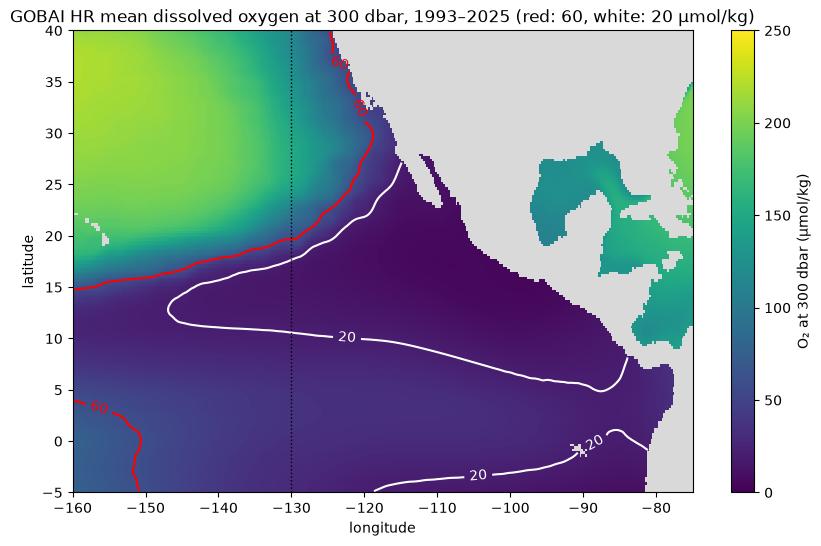

%pip install -q "icechunk>=2.3" "xarray>=2026.7" "zarr>=3.4" matplotlibGOBAI: the oxygen minimum zone of the eastern tropical North Pacific

Map the oxygen minimum zone off Mexico and Central America, and track how far it reaches, every week from 1993 to 2025, from NOAA’s GOBAI HR (Gridded Ocean Biogeochemistry from Artificial Intelligence): dissolved oxygen on a ¼° grid, 58 pressure levels, weekly.
The product is 1,719 weekly fields per variable, in netCDF files of 1.4–7.3 GB each on Google Cloud. The virtual Icechunk store makes them one dataset. No credentials needed.
The textbook idea
Below the sunlit surface, bacteria use up oxygen as they break down sinking organic matter, and only circulation brings more. In the eastern tropical Pacific, high productivity at the surface meets slow, old water at depth, and oxygen at a few hundred metres falls almost to zero: an oxygen minimum zone (OMZ). Below about 60 µmol/kg (≈ 2 mg/L) many fish and invertebrates are stressed (hypoxic); below about 20 µmol/kg most animals cannot live. Tropical OMZs have expanded over recent decades (Stramma et al. 2008).
GOBAI HR is preliminary, and it is a machine-learning estimate from temperature, salinity and sparse oxygen observations, not a measurement at each point.
Open the dataset
import time
import icechunk as ic, xarray as xr, zarr
import numpy as np, matplotlib.pyplot as plt
zarr.config.set({"async.concurrency": 64})
SRC = "gs://noaa-oar-gobai/netcdf/v202606/" # where the netCDF files, and so the data, live
repo = ic.Repository.open(
ic.gcs_storage(bucket="noaa-oar-gobai", prefix="icechunk/v202606", anonymous=True),
authorize_virtual_chunk_access=ic.containers_credentials({SRC: ic.gcs_credentials(anonymous=True)}),
)
ds = xr.open_zarr(repo.readonly_session("main").store, consolidated=False, chunks=None)
ds<xarray.Dataset> Size: 827GB
Dimensions: (time: 1719, mean_pressure: 58, latitude: 720,
longitude: 1440, vertices: 2)
Coordinates:
* time (time) datetime64[ns] 14kB 1993-01-01 ... 2025-12-05
* mean_pressure (mean_pressure) float32 232B 2.5 10.0 ... 1.975e+03
* latitude (latitude) float32 3kB -89.88 -89.62 ... 89.62 89.88
* longitude (longitude) float32 6kB 0.125 0.375 ... 359.6 359.9
mean_pressure_bnds (mean_pressure, vertices) float32 464B ...
Dimensions without coordinates: vertices
Data variables:
no3 (time, mean_pressure, latitude, longitude) float32 413GB ...
o2 (time, mean_pressure, latitude, longitude) float32 413GB ...
Attributes:
title: GOBAI HR-v1.0 gridded oxygen and nitrate
summary: GOBAI HR-v1.0 weekly gridded dissolved oxygen ...
institution: NOAA PMEL, CIMAR
Conventions: CF-1.10, ACDD-1.3
source: gs://noaa-oar-gobai/netcdf/v202606/
time_coverage_start: 1993-01-01
time_coverage_end: 2025-12-05
time_coverage_resolution: P7D
history: 2026-09-04T23:19:38Z: virtual Icechunk store b...Nothing has been read yet but metadata, and xarray already knows how much data it can reach:
print(f"Size reported by xarray: {ds.nbytes / 1e9:,.0f} GB")Size reported by xarray: 827 GBRead 33 years at 300 dbar
Every week from 1993 to 2025, one pressure level (300 dbar, about 300 m), 5 °S–40 °N and 160–75 °W. The store’s chunks are 100 weeks × one level × a 45° tile, so this is about 100 chunks; it took about a minute on a JupyterHub in AWS, and should be faster on Colab, which runs in Google Cloud next to the data.
o2 = ds.o2.sel(mean_pressure=300, latitude=slice(-5, 40), longitude=slice(200, 285))
o2 = o2.assign_coords(longitude=o2.longitude - 360) # 0–360 to −180–180
start = time.time()
o2 = o2.load()
print(f"{o2.time.size:,} weeks read in {time.time() - start:.0f} s")1,719 weeks read in 6 sMap: mean oxygen at 300 dbar
mean = o2.mean("time")
fig, ax = plt.subplots(figsize=(10, 6))
ax.set_facecolor("0.85") # land
mean.plot(ax=ax, cmap="viridis", vmin=0, vmax=250, cbar_kwargs={"label": "O₂ at 300 dbar (µmol/kg)"})
cs = mean.plot.contour(ax=ax, levels=[20, 60], colors=["w", "r"], linewidths=1.5)
ax.clabel(cs, fmt="%d")
ax.axvline(-130, color="k", ls=":", lw=1)
ax.set(title="GOBAI HR mean dissolved oxygen at 300 dbar, 1993–2025 (red: 60, white: 20 µmol/kg)",
xlabel="longitude", ylabel="latitude")
plt.show()
The white 20 µmol/kg line encloses the core of the zone, a tongue reaching west from Mexico and Central America to about 145 °W; the northern edge of its southern counterpart, off Peru, shows at the bottom. The red 60 µmol/kg line, the edge of hypoxic water, runs much further north along the coast, up Baja California and California, where the California Undercurrent carries low-oxygen water poleward.
Extent through time
Two measures, one value per week, averaged by year: the area below 60 µmol/kg in the box, and the northern edge of that water along 130 °W (the dotted line on the map), far enough offshore that the coast does not get in the way.
cell_km2 = (111.32 * 0.25) ** 2 * np.cos(np.deg2rad(o2.latitude)) # ¼° cells shrink toward the pole
hypoxic = o2 < 60
area = (hypoxic * cell_km2).sum(["latitude", "longitude"]) / 1e6 # million km²
edge = o2.latitude.where(hypoxic.sel(longitude=-130, method="nearest")).max("latitude")
fig, (ax1, ax2) = plt.subplots(2, 1, figsize=(10, 6), sharex=True)
area.groupby("time.year").mean().plot(ax=ax1, marker="o")
ax1.set(xlabel="", ylabel="million km²", title="Area below 60 µmol/kg at 300 dbar")
edge.groupby("time.year").mean().plot(ax=ax2, marker="o", color="tab:red")
ax2.set(xlabel="year", ylabel="latitude (°N)", title="Northern edge of < 60 µmol/kg water along 130 °W")
plt.tight_layout()
plt.show()
In GOBAI, the area below 60 µmol/kg at 300 dbar grew from 21.3 to 22.6 million km² (about 6 %) between 1993 and 2025, and along 130 °W its northern edge moved from about 18.9 °N to 20.7 °N, roughly 200 km. That is the direction of the expansion Stramma et al. reported. But GOBAI HR is preliminary, and oxygen observations were sparse in the early years, so treat this as something to check against observations, not as a result.
More: the GOBAI page has the viewer, ERDDAP access and how to cite GOBAI; GOBAI HR has no citable release yet.